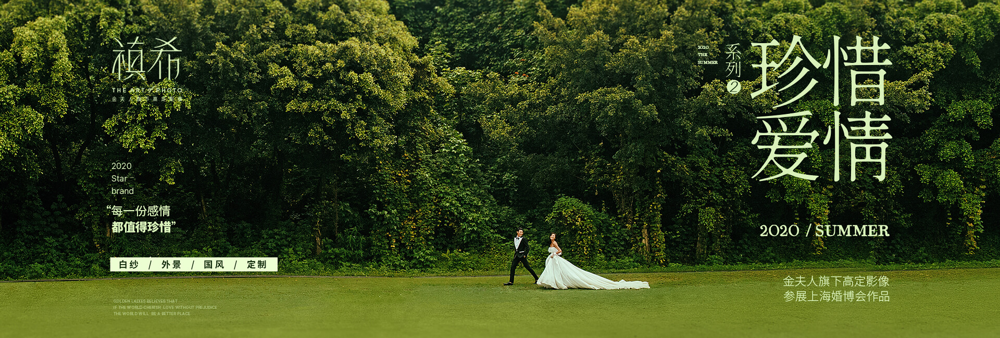
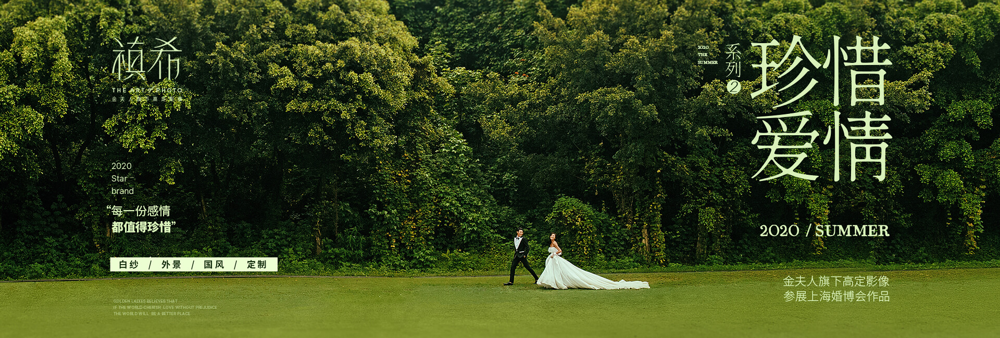

查理出生于1994年3月1日的加拿大安大略省伦敦的圣若瑟医院 ， 并在安大略省的斯特拉特 福成长。小查的母亲怀孕时年仅17岁，而他的父母结婚10个月后就离婚， 因此他从小由自己的母 亲、外公和外婆养大。
查理从小对曲棍球、 足球和国际象棋感兴趣， 并一直追求自己的音乐梦想。 他从小自学了 钢琴、鼓、吉他和小号。从五岁起他就无师自通，自学了钢琴、打鼓、 吉他和小号， 华横溢的比 伯还非常热爱唱歌， 他的歌声清脆而优美。 早在2007年查理12岁时， 在斯特拉特福德当地的歌 唱比赛中演唱尼欧的歌曲《So Sick》并获得了比赛的第二名。
22出生于1994年3月1日的加拿大安大略省伦敦的圣若瑟医院 ， 并在安大略省的斯特拉特 福成长。小查的母亲怀孕时年仅17岁，而他的父母结婚10个月后就离婚， 因此他从小由自己的母 亲、外公和外婆养大。
22从小对曲棍球、 足球和国际象棋感兴趣， 并一直追求自己的音乐梦想。 他从小自学了 钢琴、鼓、吉他和小号。从五岁起他就无师自通，自学了钢琴、打鼓、 吉他和小号， 华横溢的比 伯还非常热爱唱歌， 他的歌声清脆而优美。 早在2007年查理12岁时， 在斯特拉特福德当地的歌 唱比赛中演唱尼欧的歌曲《So Sick》并获得了比赛的第二名。
33出生于1994年3月1日的加拿大安大略省伦敦的圣若瑟医院 ， 并在安大略省的斯特拉特 福成长。小查的母亲怀孕时年仅17岁，而他的父母结婚10个月后就离婚， 因此他从小由自己的母 亲、外公和外婆养大。
33从小对曲棍球、 足球和国际象棋感兴趣， 并一直追求自己的音乐梦想。 他从小自学了 钢琴、鼓、吉他和小号。从五岁起他就无师自通，自学了钢琴、打鼓、 吉他和小号， 华横溢的比 伯还非常热爱唱歌， 他的歌声清脆而优美。 早在2007年查理12岁时， 在斯特拉特福德当地的歌 唱比赛中演唱尼欧的歌曲《So Sick》并获得了比赛的第二名。
44出生于1994年3月1日的加拿大安大略省伦敦的圣若瑟医院 ， 并在安大略省的斯特拉特 福成长。小查的母亲怀孕时年仅17岁，而他的父母结婚10个月后就离婚， 因此他从小由自己的母 亲、外公和外婆养大。
44从小对曲棍球、 足球和国际象棋感兴趣， 并一直追求自己的音乐梦想。 他从小自学了 钢琴、鼓、吉他和小号。从五岁起他就无师自通，自学了钢琴、打鼓、 吉他和小号， 华横溢的比 伯还非常热爱唱歌， 他的歌声清脆而优美。 早在2007年查理12岁时， 在斯特拉特福德当地的歌 唱比赛中演唱尼欧的歌曲《So Sick》并获得了比赛的第二名。